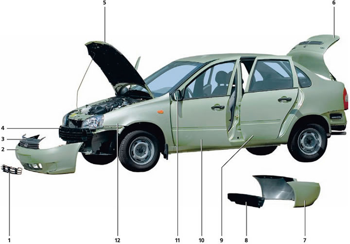
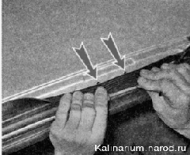

Кузов Кузовные детали съёмные: 1 — решетка бампера; 2 — передний пластиковый бампер; 3 — облицовка радиатора; 4 — энергопоглатитель переднего бампера; 5 — капот; 6 — крышка багажника; 7 — задний пластиковый бампер; 8 — энергопоглатитель заднего бампера; 9 — задняя дверь; 10 — передняя дверь; 11 — наружное зеркало; 12 — переднее крыло. Резьбовые соединения деталей кузова выполнены болтами из обычной углеродистой стали. Для ответственных соединений используются термообработанные болты из легированной хромистой стали, промаркированные символом «X» на головке. Моменты затяжки резьбовых соединений кузова
Смазки, используемые при техническом обслуживании кузова
Антикоррозийные составы для обработки кузова
Кузов автомобиля цельнометаллический, сварной, несущей конструкции (безрамный). Съемные элементы кузова: передние крылья, капот, двери, бамперы. В окнах переднего бампера на часть автомобилей установлены фары противотуманного света. Стеклоподъемники дверей могут быть как с механическим так и с электрическим приводом. Beтpoвое, заднее и боковые (не опускные) стекла — вклеены в проемы кузова. На передних дверях установлены наружные зеркала заднего вида, регулируемые из салона. Бамперы выполнены из пластмассы. Под бамперами установлены пластмассовые энергопоглащающие балки. Передние сиденья — раздельные, оборудованы подголовниками, имеют регулировки продольного перемещения и наклона спинки. Заднее сиденье трехместное, нерегулируемое, складное. Места для водителя и пассажиров оборудованы инерционными ремнями безопасности, стремя точками крепления. Для установки багажника на крышу над проемами дверей выполнены четыре площадки с резьбовыми отверстиями. Для доступа к ним необходимо снять верхние уплотнители. |